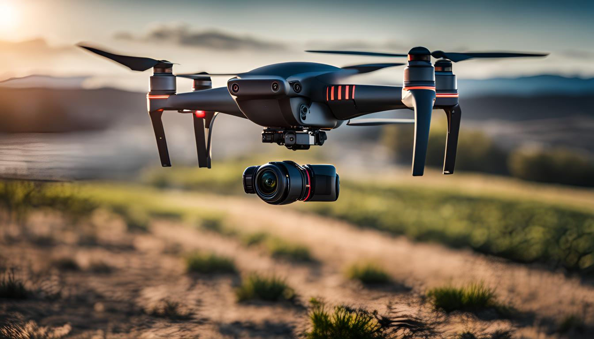

20/03/2025
Drone Teknolojisi ve Görüntü İşleme Geleceğin Hava Denetim Sistemleri
Drone teknolojisi, son yıllarda özellikle görüntü işleme kabiliyetleriyle etkileyici bir ilerleme kaydetmiş durumda. Bu yazımızda, bu iki dinamik alanın kesişme noktasını ve bu birleşimin çeşitli sektörlerde nasıl devrim yaratabileceğini inceliyoruz. Modern drone sistemlerinin, yaygın uygulama alanlarından temel kavramlarına, veri analiz tekniklerinden yenilikçi yaklaşımlarına kadar geniş bir perspektiften ele alındığı bu yazı, drone ve görüntü işleme teknolojilerinin bir arada nasıl güçlü bir sinerji oluşturduğuna dair derinlemesine bir bakış sunuyor. Sizleri bu heyecan verici teknolojik gelişmeler hakkında bilgilendirmek ve potansiyel kullanım senaryoları üzerine düşündürmek için hazırlanan bu içeriği keşfetmeye davet ediyoruz.
Temel Kavramlar ve Uygulama Alanları
Drone teknolojisi ve görüntü işleme giderek artan bir popülariteye sahiptir. Bu teknolojiler, birçok farklı sektörde verimliliği artırma ve operasyonel maliyetleri azaltma potansiyeline sahiptir. Drone teknolojisi, uzaktan kumandalı veya otonom uçuş yeteneklerine sahip küçük ve hafif hava araçlarını ifade eder. Görüntü işleme ise, bu cihazlar tarafından toplanan görüntüler üzerinde çeşitli analizler yapılmasını sağlayan yazılımsal metotlardır.
Dronelar, hava denetimi uygulamalarında oldukça etkilidir. Örneğin, büyük alanların havadan fotoğraflanması, kritik alt yapıların kontrolü veya doğal afetler sonrası hasar tespiti gibi görevlerde kullanılır. Otonom sistemler, insan müdahalesini minimuma indirgeyerek daha hızlı ve risklerden arınmış operasyonlar sunar. Görüntü işleme teknolojileri ise elde edilen görüntülerden anlamlı veriler çıkarılmasını, böylece daha bilinçli kararlar alınmasını mümkün kılar.
Endüstriyel denetim sektöründe de dronelar yoğun bir şekilde kullanılmaktadır. Özellikle inşaat, enerji ve tarım sektörlerinde, geniş alanların ve kompleks yapıların düzenli olarak izlenmesi gerekmektedir. Dronelar, bu tür zorlu ortamlarda hızlı ve güvenli bir şekilde gerçek zamanlı görüntü sağlama kapasitesi ile ön plana çıkar. Görüntü işleme sayesinde ise toplanan veriler analiz edilir ve potansiyel problemler hakkında erken uyarılar yapılabilir.
Drone Sistemlerinde Görüntü İşleme Teknikleri ve Kullanım Senaryoları
Drone teknolojisi ve görüntü işleme alanındaki ilerlemeler, çeşitli sektörlerde devrim niteliğinde uygulamaların önünü açmaktadır. Bu teknolojiler, özellikle hava denetimi ve otonom sistemlerde kullanılarak, daha önce mümkün olmayan görevlerin üstesinden gelmemizi sağlamaktadır.
Drone sistemlerinin temelinde yatan görüntü işleme teknikleri, çeşitlilik göstermektedir. Temelde, bu teknikler arasında nesne tanıma, takip etme ve sınıflandırma bulunur. Nesne tanıma, droneların çevrelerini algılamasını ve belirli nesneleri tanımasını sağlayarak, örneğin, kurtarma operasyonlarında kayıp insanları tespit etme gibi görevler için kritik öneme sahiptir.
Görüntü işlemenin bir diğer önemli kullanımı ise haritalama ve 3D modelleme alanında karşımıza çıkar. Dronelar, karasal veya kentsel alanların yüksek çözünürlüklü görüntülerini çekerek bu bölgelerin dijital haritalarını oluşturabilir. Bu sayede, şehir planlamasından çevresel izlemeye kadar geniş bir kullanım alanı bulunmaktadır.
Tarım sektöründe ise, droneların üzerine yerleştirilen gelişmiş görüntü işleme sensörleri sayesinde, bitki sağlığı izlenebilmekte ve verimlilik artırılabilmektedir. Bu sistemler, bitki örtüsünün sağlığını gözlemleyerek gerekli müdahalelerin zamanında yapılmasını sağlar.
İnşaat ve endüstriyel denetimde görüntü işleme tekniklerinden yararlanılmaktadır. Dronelar, yapılacak veya mevcut yapıların fotoğrafını çekerek, yapısal kusurları, potansiyel riskleri ve izlenmesi gereken diğer önemli noktaları daha detaylı bir şekilde analiz etme imkanı sunar.
Kullanım senaryolarının bu geniş yelpazesi, drone teknolojisinin ve görüntü işlemenin iş dünyasındaki etkinliklerini her geçen gün artırmaktadır. Bu teknolojiler sayesinde, daha güvenli, verimli ve ekonomik çözümler sunulmakta; ayrıca, zorlu ve tehlikeli saha koşullarında insan müdahalesini minimuma indirgemek mümkün olmaktadır.
Drone Teknolojisi ve Görüntü İşleme ile Veri Analizi
Drone teknolojisi ve görüntü işleme, veri analizi süreçlerinde devrim yaratmaktadır. Özellikle otonom sistemler ve endüstriyel denetim alanlarında, bu teknolojiler sayesinde toplanan veriler, işlenerek daha anlamlı ve kullanılabilir hale getirilmektedir. Dronelar, çeşitli sensörler ve kameralar ile donatılarak geniş alanlarda detaylı görüntüler toplayabilir. Bu görüntüler, görüntü işleme algoritmaları kullanılarak analiz edilir ve sonuçlar ilgili taraflara sunulur.
Görüntü işleme teknikleri, dronelar tarafından toplanan ham verilerin işlenmesinde kritik bir rol oynamaktadır. Örneğin, tarım sektöründe, dronelar aracılığıyla elde edilen görüntüler kullanılarak bitki sağlığı analizi yapılabilir. Bu analizler, bitki örtüsünün canlılığını ve hastalık belirtilerini tespit edebilir. Aynı zamanda, bu verilerle sulama ve gübreleme gibi faaliyetler daha verimli bir şekilde planlanabilir.
Endüstriyel denetim uygulamalarında ise, drone teknolojisi yapısal bütünlüğün ve güvenliğin sürekli izlenmesi için kullanılabilir. Özellikle ulaşılması zor olan yapılar, köprüler ve yüksek binalar, dronelar ile düzenli olarak denetlenebilir. Görüntü işleme algoritmaları, bu yapıların yüzeyindeki çatlak ve hasarları tespit ederek erken uyarı sistemlerinin bir parçası haline gelir.
Kısacası, hava denetimi ve güvenlik alanlarında da dronelar, geniş alanların hızlı ve etkin bir şekilde gözlemlenmesini sağlar. Özellikle kritik altyapıların ve sınırların izlenmesi gibi görevlerde, drone teknolojisi ve görüntü işleme sistemleri vazgeçilmez araçlar arasında yer almaktadır. Bu sistemler sayesinde, elde edilen veriler daha hızlı ve doğru bir şekilde işlenerek, karar verme süreçlerine önemli katkılarda bulunur.
Drone Teknolojisinde Yenilikçi Yaklaşımlar
Drone teknolojisi ve görüntü işleme konusunda yenilikçi yaklaşımlar, hava denetimi ve endüstriyel denetim alanlarında devrim yaratma potansiyeline sahip. Özellikle otonom sistemlerin geliştirilmesi, droneların kullanım alanlarını genişletiyor ve daha karmaşık görevleri yerine getirebilmelerini sağlıyor.
Örneğin, otonom dronelar, önceden programlanmış rotaları takip ederek, geniş alanların hava denetimini sağlayabilir. Bu sistemler, görüntü işleme teknolojisi sayesinde, tarım alanlarını veya kritik altyapıları detaylı bir şekilde inceleyebilir. Bu sayede, zamanında müdahale ile olası bir sorunun önüne geçilebilmekte, maliyetler düşürülerek verimlilik artırılmaktadır.
Bunun yanı sıra, endüstriyel denetimlerde dronelar, tehlikeli veya ulaşılması zor bölgelere girerek riskli insani müdahaleleri ortadan kaldırabilir. Yüksek çözünürlüklü kameralar ve ileri görüntü işleme algoritmaları ile donatılan dronelar, yapısal hasarları veya kaçakları tespit etmede büyük rol oynar.
Gelecek vaat eden bir diğer yaklaşım ise, dronelar arası iletişim ve koordinasyon sistemleridir. Bu sayede birden fazla drone, birbiriyle senkronize bir şekilde çalışarak, geniş alanları daha hızlı ve etkin bir şekilde denetleyebilir. Bu tür gelişmeler, özellikle kapsamlı gözetim ve takip gerektiren büyük ölçekli projelerde büyük önem taşımaktadır.
Drone teknolojisinin bu yenilikçi yaklaşımları, onları sadece hava fotoğrafçılığı ve video grafiden çok daha fazlası haline getirmekte ve endüstrinin yüzünü değiştirmektedir. Bu teknolojik ilerlemeler sayesinde, dronelar gittikçe daha fazla sektörde vazgeçilmez hale gelmekte ve yeni iş imkanları yaratmaktadır.
Sık Sorulan Sorular
Drone teknolojisi nedir ve nasıl çalışır?
Drone teknolojisi, çeşitli kontrol sistemleri,
sensörler ve kamera gibi bileşenleri içeren uzaktan kumandalı, otomatik veya yarı otomatik çalışabilen hava
araçlarıdır. Bu araçlar, yerden yönetilen kumandalar veya bilgisayar sistemleri aracılığıyla uçurulur ve görevlerini
yerine getirirler.
Görüntü işleme teknolojisi drone kullanımında nasıl bir rol oynar?
Görüntü işleme teknolojisi,
droneların çektiği görüntüleri analiz ederek çeşitli verileri işlemesini sağlar. Bu teknoloji sayesinde dronelar,
arama-kurtarma, haritalama, tarım ve inşaat gibi çok çeşitli alanlarda etkin bir şekilde kullanılabilir.
Drone ve görüntü işleme teknolojisinin hava denetim sistemlerindeki yeri nedir?
Hava denetim
sistemleri, özellikle trafiğin yoğun olduğu bölgelerde ve havaalanı çevrelerinde güvenliği sağlamak için kritik
öneme sahiptir. Dronelar, bu sistemlerde hızlı ve etkili bir şekilde gözetleme ve denetleme yapabilir, tehlike arz
eden durumları hızla tespit edip ilgili birimlere bildirebilir.
Gelecekte drone teknolojisinin hava denetim sistemlerine katkıları neler olabilir?
Gelecekte,
yapay zeka destekli iyileştirmeler ve daha gelişmiş görüntü işleme algoritmaları ile dronelar, daha karmaşık
görevleri yerine getirebilir ve hava denetim sistemlerinin daha da otomatikleşmesini sağlayabilir. Bu durum, hava
trafik kontrolündeki etkinliği artırabilir ve potansiyel tehlikeleri minimuma indirebilir.
Drone teknolojisinin diğer potansiyel kullanım alanları nelerdir?
Drone teknolojisi, askeri
gözetlemeden, tarımda arazi yönetimi ve sağlık hizmetlerinde acil tıbbi malzeme taşımacılığına kadar geniş bir
kullanım alanına sahiptir. Ayrıca, yangın gözetleme, suç izleme ve doğal afet durumlarında hızlı müdahale gibi
alanlarda da etkili bir araç olarak kullanılmaktadır.